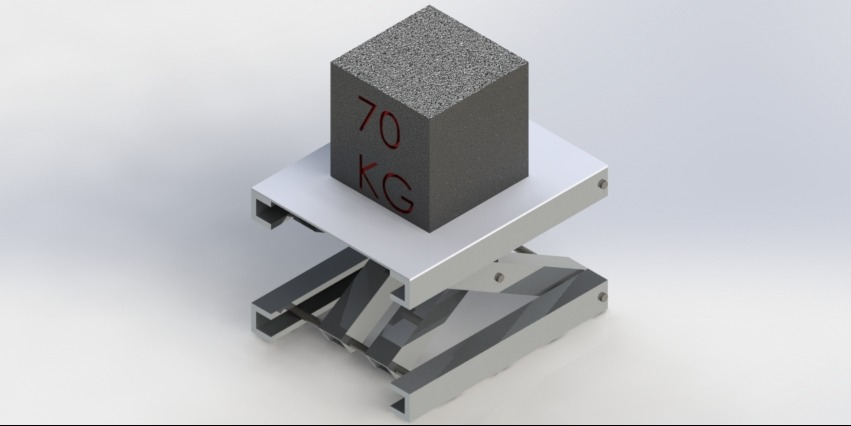

Scissor Lift
Project in collaboration with MIKEL'S.

Challenge
The objective was to design a manually operated scissor lift capable of tripling its original height while supporting a 155 lb load, all within a compact 8.5" × 11" footprint. The customer required the lift to be built primarily from aluminum, avoid welded joints, and maintain a safety factor of 1.5 across all components. These constraints, combined with the need for low‑cost manufacturing and reliable manual operation, created a demanding design environment that required careful consideration of mechanism selection, structural integrity, and manufacturability.
Solution
To address these requirements, I developed a scissor lift mechanism actuated by a power screw, replacing an initial hydraulic concept to improve manufacturability and reduce complexity. The design incorporated aluminum scissor arms sized for stiffness, a guided slider system to maintain alignment, and bolted joints that eliminated the need for welding. The geometry was optimized to achieve the required elevation ratio while ensuring smooth and controlled manual lifting. The final assembly was modeled in SolidWorks, capturing all structural components, interfaces, and motion constraints.
Engineering Process
The design process began with conceptual exploration using a morphological matrix and QFD analysis to prioritize load capacity, manufacturability, and stability. I performed analytical calculations to size the power screw, determine torque requirements, and evaluate bar thickness and bolt diameters.
The full assembly was then modeled in SolidWorks, where I conducted FEA simulations to validate structural integrity, assess von Mises stresses, and confirm that the safety factor exceeded 1.5 under load. I also developed manufacturing drawings and process plans detailing machining operations such as drilling, threading, turning, and milling.
Although pandemic restrictions prevented physical fabrication, the digital prototype and documentation were completed to production‑ready standards.
Results
The final design met all customer requirements, supporting 155 lb with a verified safety factor of 1.5 and achieving the required height extension within the specified footprint. The project demonstrated a complete engineering workflow from customer requirements and conceptual design to CAD modeling, analytical calculations, FEA validation, and manufacturing planning. The work was presented to both academic faculty and the company’s management, receiving strong evaluations for its technical rigor and manufacturability.